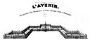

E-mail: cronse at unistra.fr
Emeritus University Professor.
Université de Strasbourg.
Member of ICube
(Laboratoire des sciences de l'ingénieur, de l'informatique et de
l'imagerie), UMR 7357 CNRS, co-responsible of
its IMAGeS
(Images, Modélisation, Apprentissage, Géométrie
et Statistique) research team, and of its
Discrete
Geometry and Mathematical Morphology theme.
Image processing and analysis:
Mathematical models - mathematical morphology -
lattice theory - topology - image segmentation -
medical imaging.
My official
research
web page.
List of publications - Unpublished reports and working documents - Preprints
| (Ph.D. students) | Ph.D.'s: | ||||||||||
| C. Boos | V. Agnus | B. Naegel | N. Passat | J. Lamy | E. Aptoula | B. Bouraoui | L. Mazo | A. Dufour | H. Rojbani |
European Workshop
"Frontiers of Mathematical Morphology"
11th
Workshop "Theoretical Foundations of Computer Vision"
Image Processing: List of courses in French or in English - Exams - Documentation (in French)
Algebra, combinatorics, graph theory, logic, theory of computing, Fourier analysis, signal processing, CS English, etc.
Colour for junior high school pupils: 2013 slides - 2013 worksheets - 2014 slides - 2014 printable version - 2015 slides - 2015 printable version.
Born on June the 9th, 1954. Nationality: Belgian.
Studied pure mathematics at the Université Libre de Bruxelles (Licence, 1976) and the University of Oxford (M.Sc., 1977; Ph.D., 1979), specializing in group theory.
1979-1991: Member of Scientific Staff at the Philips Research Laboratory Brussels. Research on combinatorics of switching circuits, feedback shift registers, discrete geometry, image processing and mathematical morphology.
1991-1992: Teaching and research at the Université Bordeaux-1.
From October 1992 to November 2020: Professor at the Université de Strasbourg. First Class Sep. 2001, exceptional class Sep. 2010. From 1994 to 1996, Director of the Department of Computer Science. From autumn 1996 to autumn 2005, Head of doctoral studies in Computer Science.
Since December 2020: Emeritus Professor, ICube, Université de Strasbourg.
My Erdös number is at most 4: Christian Ronse - Marc Davio - Yvo G. Desmedt - Andrew M. Odlyzko - Paul Erdös.
Laboratoire ICube CNRS-Université de Strasbourg

{kind=link}
{kind=link}
{kind=link}
{kind=link}
{kind=link}
{kind=link}
{kind=link}